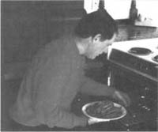
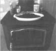

As a youngster, I developed an affinity for homemade jerky. My dad and I enjoyed the hours we spent tending jerky as it slowly dried over a smoky fire. I often ate it as a snack (and sometimes as a trail lunch) and always found it delicious.
While my dad's jerky was always tender and tasty, I just can't find the time necessary to make it the old-fashioned way. Fortunately, I've discovered an unusually fast and easy way to prepare jerky.
Late one afternoon during a search-and-rescue-team training session, another team member handed me a slice of jerky to sample. He said he had made it entirely in his own kitchen; he had even dried it in his oven! It was as good as any I had ever eaten and much better than what's sold in grocery stores. My friend shared his simple technique with me, and now I use it frequently. Jerky made this way never lasts long around my house.
Jerky is made best with a lean variety of meat. A few of the possibilities include turkey, beef, buffalo, elk, and venison. The one principle that remains constant regardless of the meat you use is: The better the cut of meat, the more tender the resulting jerky. Round steak, flank steak, sirloin tip, and rump roast are also good choices.
Cold meat slices easier and thinner than warm meat. Therefore, before actually beginning to prepare meat for drying, cover it completely with plastic wrap and place it in a freezer. Leave it there until the texture of the meat begins to stiffen.
After removing from the freezer, lay the meat on a cutting board. Cut out bone, tendons, and any thick connecting tissue. Then, using a very sharp knife, trim off the fat. This is the most important step in the preparation of jerky. Fat spoils quickly, causing unappetizing flavors to develop during the drying and storage process. Trimming the fat off wild game will also tone down strong flavors associated with it.
Slice the remaining lean meat into thin strips, approximately 1/4" thick. If the meat strips are not all about the same thickness, determining the drying time becomes haphazard at best.
Mix the vinegar, water, salt, and pepper together in a glass or stainless-steel pot. Bring the mixture to a boil and add the meat slices. (Since meat from wild animals sometimes contains dangerous organisms, boiling supplies a necessary safeguard. The brine solution also helps to remove any remaining wild taste.) When the color of the meat changes to gray-brown and the texture takes on a somewhat rubbery appearance - usually in about five minutes - pour off the boiling water.
When your meat is ready to dry, space evenly to allow for air circulation. Leave the oven door open to allow moisture to escape. Cook at 200°F for about an hour and a half, longer if
you like your jerky a little more crispy.
Take the strips of meat and place them between layers of paper towels resting on a smooth surface, such as a countertop. Using a rolling pin or even hand pressure, mash strips to remove any excess brine and flatten for quick, uniform drying. (Observe the color of the juices pressed from the meat. A red color indicates that the meat needs additional boiling.)
Align the meat strips on oven racks. Allow just enough space between each strip for air circulation. Place one rack about four inches from the top of the oven and the other rack about four inches from the bottom. Set the temperature at 200°F and leave the oven door cracked to allow moisture to escape as the meat dries.
The meat should be done in about 1 1/2 hours. A simple test confirms that the jerky is done: Remove a strip from the oven and bend it. The strip should crack but not break. (For crispier jerky, leave it in the oven a little longer.)
Using a pastry brush, "paint" both sides of the jerky with a steak sauce.
Take the dried meat strips from the oven and lay them on a sheet of wax paper; allow to cool. Then, using a pastry brush, "paint" both sides of the jerky with a steak sauce. For variety, paint parts of the batch with several different sauces, and leave some of the batch unseasoned.
Keep the finished jerky in ziplock bags. Remove as much air as possible before sealing. Store in a cool, dry, dark place or in the refrigerator or freezer. This quick and easy method produces jerky so tender and tasty that it almost immediately disappears. Kids love it as an afterschool snack, and it makes a great trail lunch. Better still, it rates as a gourmet treat at parties.
2 quarts of water
1 cup vinegar
2 cups salt
2 tablespoons course ground pepper
10 pounds of meat
Barbecue and/or other steak sauces
|
Slicing the meat uniformly is important - if the strips are not all about the same thickness, figuring how long to dry them because a guessing game rather than a calculated effort |
 When your meat is ready to dry, space evenly to allow for air circulation. Leave the oven door open to allow moisture to escape. Cook at 200°F for about an hour and a half, longer if you like your jerky a little more crispy |
 |